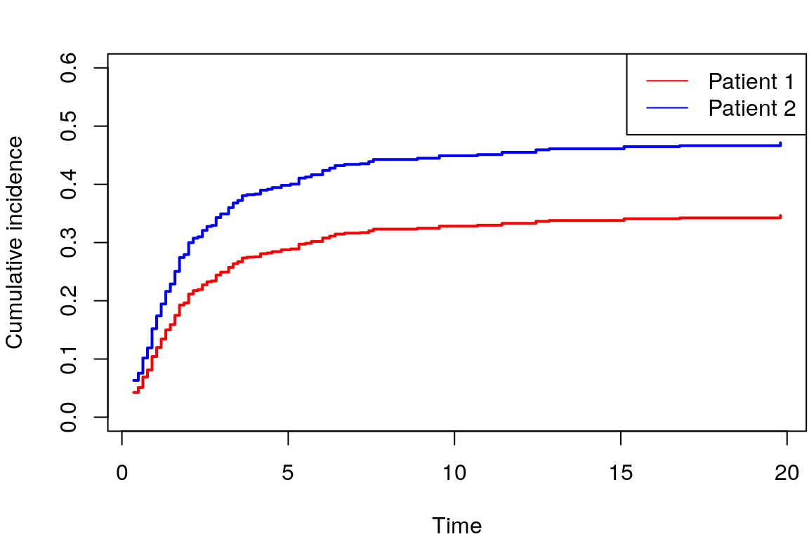

Approaches based on CIF specification
Karla Monterrubio-Gómez, Nathan Constantine-Cooke, and Catalina Vallejos
2022-12-08
Dataset
In order to demonstrate the methods, we employ publicly available data.
The dataset used here corresponds to the Hodgkin’s disease (HD) study described in Pintilie (2006). The dataset comprises 865 patients diagnosed with early stage (I or II) HD, and which were treated either with radiation (RT) or with radiation and chemotherapy (CMT).
The recorded data includes:
- age: Age (years)
- sex: Sex, F=female and M=Male.
- trtgiven: Treatment given, RT=Radiation, CMT=Chemotherapy and radiation
- medwidsi: Size of mediastinum involvement, N=No, S=Small, L=Large
- extranod: Extranodal disease, Y=Extranodal disease, N= Nodal disease
- clinstg: Clinical stage, 1=Stage I, 2=Stage II
- time: time to failure (years) calculated from the date of diagnosis
- status: 0=censoring, 1=relapse and 2=death.
We now load and display the structure of the HD dataset:
library(readr)
hd <- data.frame(read_csv("../Data/HD/hd.csv",
col_types = cols(X1 = col_skip())))
str(hd)
#> 'data.frame': 865 obs. of 9 variables:
#> $ ...1 : num 1 2 3 4 5 6 7 8 9 10 ...
#> $ age : num 64 63 17 63 21 37 41 35 27 32 ...
#> $ sex : chr "F" "M" "M" "M" ...
#> $ trtgiven: chr "RT" "RT" "RT" "RT" ...
#> $ medwidsi: chr "N" "N" "N" "N" ...
#> $ extranod: chr "N" "N" "N" "N" ...
#> $ clinstg : num 1 1 2 2 2 1 2 2 2 2 ...
#> $ time : num 3.1 15.9 0.9 13.1 35.9 1.1 2.5 0.003 4.1 28.1 ...
#> $ status : num 2 2 1 2 0 1 1 1 1 0 ...To proceed with the analysis, it is important to change the data type of sex, trtgiven, medwidsi, and extranod from character to factor. Similarly, we convert clinstg from numeric to factor.
hd$sex <- as.factor(hd$sex)
hd$trtgiven <- as.factor(hd$trtgiven)
hd$medwidsi <- as.factor(hd$medwidsi)
hd$extranod <- as.factor(hd$extranod)
hd$clinstg <- as.factor(hd$clinstg)Now, we explore the number of events for each event type:
require(pander)
pander::pander(table(hd$status))| 0 | 1 | 2 |
|---|---|---|
| 439 | 291 | 135 |
Thus, we have 439 censored patients,
rlength(which(hd$status==1))` with relapse, and 135 who
died. From now on, we assume that the event of interest is relapse,
i.e. status=1.
In order to create a test set, we use stratified sampling to partition our dataset into 80% for train and 20% for test.
library(splitstackshape)
set.seed(2022)
split_data <- stratified(hd, c("status"), 0.8, bothSets = TRUE)
hd_train <- split_data$SAMP1[,-1]
hd_test <- split_data$SAMP2[,-1]Now, we explore the number of observations per status in both train and test set:
pander::pander(table(hd_train$status))| 0 | 1 | 2 |
|---|---|---|
| 351 | 233 | 108 |
pander::pander(table(hd_test$status))| 0 | 1 | 2 |
|---|---|---|
| 88 | 58 | 27 |
Fine-Gray
In contrast to models that use a cause-specific CPH specification, this approach permits inferences for the covariate effects on both the hazard function and the survival function due to the fact that competing events are treated differently.
As with cause-specific CPH models, there are several R packages to
fit a sub-distribution hazards model. Here we explore
cmprsk and riskRegression.
cmprsk
In order to fit the model, one should first create a design matrix
containing the covariates of interest, this can be done employing the
model.matrix() function, which creates dummy variables for
the discrete predictors.
library(cmprsk)
predictors <- model.matrix(~ age +
sex +
trtgiven +
medwidsi +
extranod +
clinstg,
data = hd_train)
head(predictors)
#> (Intercept) age sexM trtgivenRT medwidsiN medwidsiS extranodY clinstg2
#> 1 1 55.00 1 1 1 0 0 0
#> 2 1 51.00 1 1 0 1 1 0
#> 3 1 19.00 1 1 1 0 0 0
#> 4 1 52.23 1 0 1 0 0 1
#> 5 1 41.00 0 1 1 0 0 1
#> 6 1 25.00 0 1 1 0 0 0Note that our covariates now correspond to binary indicators (1 or 0)
of a specific level of the original factor variables. In order to use
this design matrix, we will first drop the intercept. Once that has been
done, we can employ the crr() function to fit the
model.
predictors <- predictors[, -1] # drop first column (intercept)
FG_crr <- crr(ftime = hd_train$time,
fstatus = hd_train$status,
cov1 = predictors, # for time interactions use argument cov2
failcode = 1,
cencode = 0)
summary(FG_crr)
#> Competing Risks Regression
#>
#> Call:
#> crr(ftime = hd_train$time, fstatus = hd_train$status, cov1 = predictors,
#> failcode = 1, cencode = 0)
#>
#> coef exp(coef) se(coef) z p-value
#> age 0.0136 1.014 0.00436 3.109 0.00190
#> sexM 0.0705 1.073 0.13587 0.519 0.60000
#> trtgivenRT 0.7030 2.020 0.20557 3.419 0.00063
#> medwidsiN -0.0594 0.942 0.25960 -0.229 0.82000
#> medwidsiS -0.4029 0.668 0.25558 -1.577 0.11000
#> extranodY 0.3162 1.372 0.25042 1.263 0.21000
#> clinstg2 0.3376 1.402 0.15373 2.196 0.02800
#>
#> exp(coef) exp(-coef) 2.5% 97.5%
#> age 1.014 0.987 1.005 1.02
#> sexM 1.073 0.932 0.822 1.40
#> trtgivenRT 2.020 0.495 1.350 3.02
#> medwidsiN 0.942 1.061 0.567 1.57
#> medwidsiS 0.668 1.496 0.405 1.10
#> extranodY 1.372 0.729 0.840 2.24
#> clinstg2 1.402 0.714 1.037 1.89
#>
#> Num. cases = 692
#> Pseudo Log-likelihood = -1462
#> Pseudo likelihood ratio test = 33.1 on 7 df,The above output includes the estimated covariate effects
exp(coef), as well as significance level from which we can
infer that the marginal effects for age, treatment given, and clinical
stage are significant. Note however that estimated hazard ratios are
non-identical to those inferred in the cause-specific vignette. This is
because the risks set differ between these two hazard functions.
In this setting, we can make inferences on both, the covariate effects on the sub-distribution hazard and the directional effects of covariates on the CIF. For instance, the sub-distribution hazard ratio of relapse is 1.402 when a patient is in clinical stage 2. In addition, because the hazard ratio is greater than one, one can also infer that being in clinical stage 2 increases the incidence of relapse. Here, is important to highlight that we cannot use the magnitude of the hazard ratios to make inferences on the magnitude of the effect on the probability of occurrence.
Because the sub-distribution hazard is directly related to the
cumulative incidence function, we can make risk predictions. In order to
do this, we first convert our test data (hd_test) into a
design matrix format. Then, the function predict() will
return the estimated CIF at all unique time events for all patients in
the test set. This function computes \(1-\exp(-H)\), where \(H\) is the cumulative hazard obtained using
the Breslow estimator.
predictors_test <- model.matrix(~ age +
sex +
trtgiven +
medwidsi +
extranod +
clinstg,
data = hd_test)[, -1]
CIF_hat <- predict(object = FG_crr, cov1 = predictors_test)
dim(CIF_hat)
#> [1] 72 174The first column in CIF_hat corresponds to the 72 unique event times and the remaining 71 columns are the estimated CIFs for each patient (given their covariate values) at such event times. As an illustration, the following code is used to plot the estimated CIF for events type 1 for two patients in the training dataset. The first patient is 37 years old, male, under radiation treatment, no mediastinum involvement, no extranodal disease, and in clinical stage 1. The second patient is 41 years old, male, under radiation, no mediastinum involvement, no extranodal disease, and clinical stage 2.
par(mar = c(4, 4, 2, 0.1))
plot(CIF_hat[, 1],
CIF_hat[, 2],
type = "l",
col = "red",
ylim = c(0, 0.6),
xlab = "Time (years)",
ylab = "Cumulative incidence")
lines(CIF_hat[, 1], CIF_hat[, 4], col="blue")
legend("topright", legend = c("Patient 1", "Patient 2"),
lty = c(1,1), col = c("red", "blue"))
NOTE: Using
cmprskit is not straightforward to do predictions at a specific time point beyond the unique time-points present in the training data.
riskRegression
The function FGR() in this R package acts as a wrapper
of the crr() function described above. However, it permits
directly specifying the model through the formula argument, where we use
Hist() to obtain the the response variable. When the cause
argument is not passed, the default is 1.
Below we confirm that estimated coefficients are identical to those
obtained with cmprsk package and the interpretation is the
same.
library(prodlim) # for Hist()
library(riskRegression)
FG_riskRegression <- FGR(formula = Hist(time, status) ~
age +
sex +
trtgiven +
medwidsi +
extranod +
clinstg,
data = hd_train,
cause = 1)
print(FG_riskRegression)
#>
#> Right-censored response of a competing.risks model
#>
#> No.Observations: 692
#>
#> Pattern:
#>
#> Cause event right.censored
#> 1 233 0
#> 2 108 0
#> unknown 0 351
#>
#>
#> Fine-Gray model: analysis of cause 1
#>
#> Competing Risks Regression
#>
#> Call:
#> FGR(formula = Hist(time, status) ~ age + sex + trtgiven + medwidsi +
#> extranod + clinstg, data = hd_train, cause = 1)
#>
#> coef exp(coef) se(coef) z p-value
#> age 0.0136 1.014 0.00436 3.109 0.00190
#> sexM 0.0705 1.073 0.13587 0.519 0.60000
#> trtgivenRT 0.7030 2.020 0.20557 3.419 0.00063
#> medwidsiN -0.0594 0.942 0.25960 -0.229 0.82000
#> medwidsiS -0.4029 0.668 0.25558 -1.577 0.11000
#> extranodY 0.3162 1.372 0.25042 1.263 0.21000
#> clinstg2 0.3376 1.402 0.15373 2.196 0.02800
#>
#> exp(coef) exp(-coef) 2.5% 97.5%
#> age 1.014 0.987 1.005 1.02
#> sexM 1.073 0.932 0.822 1.40
#> trtgivenRT 2.020 0.495 1.350 3.02
#> medwidsiN 0.942 1.061 0.567 1.57
#> medwidsiS 0.668 1.496 0.405 1.10
#> extranodY 1.372 0.729 0.840 2.24
#> clinstg2 1.402 0.714 1.037 1.89
#>
#> Num. cases = 692
#> Pseudo Log-likelihood = -1462
#> Pseudo likelihood ratio test = 33.1 on 7 df,
#>
#> Convergence: TRUEDifferently to cmprsk,riskRegression
permits to do predictions of the CIF at a specific time point
(e.g. \(t=5\) years) for a new dataset
(e.g. hd_test). Below, we show results for the first 5
subjects in the test set.
FG.prediction <- predict(FG_riskRegression, newdata = hd_test, times = 5)
FG.prediction[c(1:5)]
#> [1] 0.2964653 0.4056692 0.3361023 0.3202368 0.2351294Because the Fine-Gray model can be recovered when a complementary
log-log link function is used in a transformation model (Gerds, Scheike, and Andersen (2012)), we can use
riskRegression() with link = "prop" as shown
below:
FG.prop <- riskRegression(formula = Hist(time, status) ~
age +
sex +
trtgiven +
medwidsi +
extranod +
clinstg,
data = hd_train,
cause = 1,
link = "prop")
summary(FG.prop)
#>
#> riskRegression: Competing risks regression model
#>
#> IPCW estimation. The weights are based on
#> the Kaplan-Meier estimate for the censoring distribution.
#>
#> Link function: 'proportional' yielding sub-hazard ratios (Fine & Gray 1999), see help(riskRegression).
#>
#> Covariates with time-varying effects:
#>
#> Intercept (numeric)
#>
#> The effects of these variables depend on time.The column 'Intercept' is the baseline risk where all the covariates have value zero
#>
#> (Intercept)
#> 0.36 "0.0123"
#> 2 "0.0670"
#> 3.8 "0.0906"
#> 6.4 "0.1064"
#> 20 "0.1199"
#>
#> Shown are selected time points, use
#>
#> plot.riskRegression
#>
#> to investigate the full shape.
#>
#>
#> Covariates with time-constant effects:
#>
#> age (numeric)
#> sexM (numeric)
#> trtgivenRT (numeric)
#> medwidsiN (numeric)
#> medwidsiS (numeric)
#> extranodY (numeric)
#> clinstg2 (numeric)
#>
#> Time constant regression coefficients:
#>
#> Factor Coef exp(Coef) StandardError z CI_95 Pvalue
#> age 0.01649 1.01663 0.00431 3.82626 [1.008;1.025] 0.0001301
#> sexM 0.0133 1.0134 0.1419 0.0939 [0.767;1.338] 0.9251590
#> trtgivenRT 0.712 2.037 0.217 3.283 [1.332;3.115] 0.0010271
#> medwidsiN -0.0687 0.9336 0.2768 -0.2481 [0.543;1.606] 0.8040708
#> medwidsiS -0.407 0.665 0.274 -1.489 [0.389;1.137] 0.1364193
#> extranodY 0.231 1.259 0.254 0.908 [0.766;2.071] 0.3637606
#> clinstg2 0.339 1.403 0.163 2.082 [1.020;1.930] 0.0373014
#>
#>
#> Note: The values exp(Coef) are sub-hazard ratios (Fine & Gray 1999)In this case, predict() returns the risk at observed
time points for each subject.
prediction.FG.prop <- predict(FG.prop, newdata = hd_test[c(1, 2), ])
prediction.FG.prop
#> $time
#> [1] 0.3550000 0.4926531 0.6303061 0.7679592 0.9056122 1.0432653
#> [7] 1.1809184 1.3185714 1.4562245 1.5938776 1.7315306 1.8691837
#> [13] 2.0068367 2.1444898 2.2821429 2.4197959 2.5574490 2.6951020
#> [19] 2.8327551 2.9704082 3.2080612 3.3457143 3.4833673 3.6210204
#> [25] 3.7586735 3.9926531 4.1679592 4.3716327 4.5185714 4.7938776
#> [31] 5.0691837 5.3222449 5.5197959 5.6975510 6.0352041 6.2457143
#> [37] 6.4105102 6.6926531 7.1574490 7.4234694 7.5611224 8.8840816
#> [43] 9.5457143 10.6889796 11.4290816 12.4493878 12.8481633 15.0987755
#> [49] 16.7716327 19.8000000
#>
#> $risk
#> [,1] [,2] [,3] [,4] [,5] [,6] [,7]
#> [1,] 0.04268004 0.05112741 0.06900018 0.08112631 0.1041914 0.1197376 0.1343491
#> [2,] 0.06328963 0.07565201 0.10162716 0.11910964 0.1520457 0.1740082 0.1944747
#> [,8] [,9] [,10] [,11] [,12] [,13] [,14]
#> [1,] 0.1499184 0.1591504 0.1749583 0.1926217 0.1963322 0.2116438 0.2173892
#> [2,] 0.2160937 0.2288202 0.2504501 0.2743753 0.2793683 0.2998503 0.3074850
#> [,15] [,16] [,17] [,18] [,19] [,20] [,21]
#> [1,] 0.2192026 0.2274841 0.2326651 0.2339825 0.2442934 0.2492066 0.2574446
#> [2,] 0.3098889 0.3208316 0.3276478 0.3293774 0.3428628 0.3492565 0.3599301
#> [,22] [,23] [,24] [,25] [,26] [,27] [,28]
#> [1,] 0.2636049 0.2669364 0.2735112 0.2748284 0.2756051 0.2809147 0.2820748
#> [2,] 0.3678732 0.3721550 0.3805769 0.3822596 0.3832511 0.3900149 0.3914895
#> [,29] [,30] [,31] [,32] [,33] [,34] [,35]
#> [1,] 0.2844348 0.2874550 0.2890380 0.2972745 0.2987909 0.3018743 0.3078412
#> [2,] 0.3944854 0.3983123 0.4003149 0.4106985 0.4126036 0.4164711 0.4239312
#> [,36] [,37] [,38] [,39] [,40] [,41] [,42]
#> [1,] 0.3109461 0.3144607 0.3161547 0.3170026 0.3199931 0.3229954 0.3246863
#> [2,] 0.4278003 0.4321695 0.4342715 0.4353226 0.4390247 0.4427332 0.4448181
#> [,43] [,44] [,45] [,46] [,47] [,48] [,49]
#> [1,] 0.3281412 0.3297946 0.3329718 0.3364468 0.3378281 0.3409324 0.3423308
#> [2,] 0.4490702 0.4511013 0.4549971 0.4592476 0.4609341 0.4647178 0.4664193
#> [,50]
#> [1,] 0.3464244
#> [2,] 0.4713900
#>
#> attr(,"class")
#> [1] "predictedRisk"Below, we plot the CIF for patient 1 (red) and 2 (blue) in the test set.
par(mar = c(4, 4, 2, 0.1))
plot(prediction.FG.prop$time,
prediction.FG.prop$risk[1, ],
type = "l",
col = "red",
ylim = c(0, 0.6),
xlab = "Time (years)",
ylab = "Cumulative incidence")
lines(prediction.FG.prop$time, prediction.FG.prop$risk[2, ], col="blue")
legend("topright", legend = c("Patient 1", "Patient 2"),
lty = c(1,1), col = c("red", "blue"))Sparse regression
CoxBoost was deleted from CRAN
Pseudo-values
NOTE: the package have been updated with respect to the code shown in Klein et al. (2008). The user is referred to the package documentation for the function.**
We define a time point grid of \(M=7\) equally spaced points at which we
will compute the pseudo-values. Pseudo-observations are computed with
the pseudoci() function for both competing events. Below,
we only consider relapse (cause 1).
library(pseudo)
cutoffs <- c(5, 10, 15, 20, 25, 30, 35)
pseudo <- pseudoci(hd_train$time,
hd_train$status,
tmax = cutoffs)$pseudo$cause1 # we only consider cause 1
dim(pseudo)
#> [1] 692 7pseudo contains the pseudo-values of the 692 patients
(rows) at the 7 different time points (columns) for relapse.
The following code will merge the pseudo-values with our train dataset.
merged_dataset <- NULL
for (j in seq_len(ncol(pseudo))) {
merged_dataset <- rbind(merged_dataset,
cbind(hd_train,
pseudo = pseudo[, j],
tpseudo = cutoffs[j],
id = seq_len(nrow(hd_train))))
}
merged_dataset <- merged_dataset[order(merged_dataset$id), ]
merged_dataset$tpseudo <- as.factor(merged_dataset$tpseudo)We will now fit a generalised linear model using geese()
function from R package geepack. We set
mean.link = "cloglog" to use a complementary log-log link
in order to recover Fine-Gray approach (alternative link functions can
also be used, e.g. Klein et al. (2008) explored a
logistic link function).
library(geepack)
fit_pseudo <- geese(pseudo ~
tpseudo +
age +
sex +
trtgiven +
medwidsi +
extranod +
clinstg - 1,
data = merged_dataset,
id = id,
jack = TRUE,
scale.fix = TRUE,
family = gaussian,
mean.link = "cloglog",
corstr = "independence")
summary(fit_pseudo)
#>
#> Call:
#> geese(formula = pseudo ~ tpseudo + age + sex + trtgiven + medwidsi +
#> extranod + clinstg - 1, id = id, data = merged_dataset, family = gaussian,
#> mean.link = "cloglog", scale.fix = TRUE, corstr = "independence",
#> jack = TRUE)
#>
#> Mean Model:
#> Mean Link: cloglog
#> Variance to Mean Relation: gaussian
#>
#> Coefficients:
#> estimate san.se ajs.se wald p
#> tpseudo5 -2.09156255 0.304444865 0.306480315 47.1980882 6.416312e-12
#> tpseudo10 -1.93467529 0.303505493 0.305580169 40.6333901 1.836417e-10
#> tpseudo15 -1.89317851 0.304132302 0.306209180 38.7487802 4.820113e-10
#> tpseudo20 -1.87334298 0.304302051 0.306377963 37.8987455 7.451314e-10
#> tpseudo25 -1.87334298 0.304302051 0.306377963 37.8987455 7.451314e-10
#> tpseudo30 -1.87334298 0.304302051 0.306377963 37.8987455 7.451314e-10
#> tpseudo35 -1.87334298 0.304302051 0.306377963 37.8987455 7.451314e-10
#> age 0.01187650 0.004197232 0.004222343 8.0066538 4.660578e-03
#> sexM 0.04476491 0.135461219 0.135829640 0.1092057 7.410502e-01
#> trtgivenRT 0.71119910 0.202461201 0.203996253 12.3395346 4.434656e-04
#> medwidsiN -0.11158758 0.262221132 0.265533993 0.1810908 6.704375e-01
#> medwidsiS -0.44758745 0.258239410 0.261306977 3.0040749 8.305538e-02
#> extranodY 0.21683169 0.236076424 0.241292660 0.8436072 3.583671e-01
#> clinstg2 0.27668796 0.155666142 0.155970837 3.1593097 7.549510e-02
#>
#> Scale is fixed.
#>
#> Correlation Model:
#> Correlation Structure: independence
#>
#> Returned Error Value: 0
#> Number of clusters: 692 Maximum cluster size: 7Covariate effects are shown below and are interpreted as logarithms of sub-distribution hazard ratios. Because we used a complementary log-log link function, we observe that the estimated effects are akin to those obtained in the previous section.
exp(fit_pseudo$beta)
#> tpseudo5 tpseudo10 tpseudo15 tpseudo20 tpseudo25 tpseudo30 tpseudo35
#> 0.1234940 0.1444712 0.1505924 0.1536093 0.1536093 0.1536093 0.1536093
#> age sexM trtgivenRT medwidsiN medwidsiS extranodY clinstg2
#> 1.0119473 1.0457820 2.0364317 0.8944131 0.6391683 1.2421350 1.3187548The estimated coefficients for the selected time points can be used
to estimate the CIF, but this is only possible at the time-points used
in the cutoffs grid.
Direct binomial
Binomial modelling approach can be fitted using the
timereg R package.
To fit the model, we should first use the Event()
function to obtain the response variable to be used in the formula
argument of the comp.risk() function. The cause of interest
must be explicitly defined through the cause argument. The function
supports several models. Here we focus on recovering the Fine-Gray
approach.
library(timereg)
fit_DB <- comp.risk(Event(time, status) ~
const(age) + # const for time-invariant
const(sex) +
const(trtgiven) +
const(medwidsi) +
const(extranod) +
const(clinstg),
data = hd_train,
cause = 1,
n.sim = 5000,
model = "prop", # Fine-Gray
resample.iid = 1)
summary(fit_DB)
#> Competing risks Model
#>
#> Test for nonparametric terms
#>
#> Test for non-significant effects
#> Supremum-test of significance p-value H_0: B(t)=0
#> (Intercept) 11.9 0
#>
#> Test for time invariant effects
#> Kolmogorov-Smirnov test p-value H_0:constant effect
#> (Intercept) 1.63 0
#> Cramer von Mises test p-value H_0:constant effect
#> (Intercept) 3.79 0
#>
#> Parametric terms :
#> Coef. SE Robust SE z P-val lower2.5%
#> const(age) 0.0165 0.00431 0.00431 3.8300 0.00013 0.00805
#> const(sex)M 0.0133 0.14200 0.14200 0.0939 0.92500 -0.26500
#> const(trtgiven)RT 0.7120 0.21700 0.21700 3.2800 0.00103 0.28700
#> const(medwidsi)N -0.0687 0.27700 0.27700 -0.2480 0.80400 -0.61200
#> const(medwidsi)S -0.4070 0.27400 0.27400 -1.4900 0.13600 -0.94400
#> const(extranod)Y 0.2310 0.25400 0.25400 0.9080 0.36400 -0.26700
#> const(clinstg)2 0.3390 0.16300 0.16300 2.0800 0.03730 0.01950
#> upper97.5%
#> const(age) 0.0249
#> const(sex)M 0.2920
#> const(trtgiven)RT 1.1400
#> const(medwidsi)N 0.4740
#> const(medwidsi)S 0.1300
#> const(extranod)Y 0.7290
#> const(clinstg)2 0.6580
#> According to the summary output, the covariate effects associated to age, treatment and clinical stage are significant. Below, we show estimated hazard ratios.
knitr::kable(round(exp(fit_DB$gamma), 4), col.names = c("Exp coef"))| Exp coef | |
|---|---|
| const(age) | 1.0166 |
| const(sex)M | 1.0134 |
| const(trtgiven)RT | 2.0372 |
| const(medwidsi)N | 0.9336 |
| const(medwidsi)S | 0.6654 |
| const(extranod)Y | 1.2593 |
| const(clinstg)2 | 1.4033 |
In order to do predictions of the CIF, we use the
predict() function. The default makes predictions at all
observed time points. Below we show estimated incidence for the first
(red) and second (blue) patients in the tests set:
par(mar = c(4, 4, 2, 0.1))
pred_DB <- predict.timereg(fit_DB,
newdata = as.data.frame(hd_test[1:2,1:6]), se = 0)
plot(pred_DB,
multiple = 1,
col = c("red", "blue"),
ylim = c(0, 0.6),
ylab = "Cumulative incidence")
legend("topright", legend = c("Patient 1", "Patient 2"),
lty = c(1,1), col = c("red", "blue"))
In addition, one can also makes predictions at a specific time
through the argument times. Absolute risk predictions at
time \(t=5\) for the first 5 patients
are shown:
pred_DB.t <- predict.timereg(fit_DB, newdata = hd_test[, 1:6], times = 5)
pred_DB.t$P1[1:5]
#> [1] 0.2874550 0.3983123 0.3151614 0.2977388 0.2162792timereg permits fitting the model time varying effects.
For example, the following code includes a time-dependent effect for
trtgiven.
fit_DBtime <- comp.risk(Event(time, status) ~
const(age) +
const(sex) +
trtgiven +
const(medwidsi) +
const(extranod) +
const(clinstg),
data = hd_train,
cause = 1,
model = "prop", # Fine-Gray
resample.iid = 1,
n.sim = 100)
summary(fit_DBtime)
#> Competing risks Model
#>
#> Test for nonparametric terms
#>
#> Test for non-significant effects
#> Supremum-test of significance p-value H_0: B(t)=0
#> (Intercept) 8.60 0
#> trtgivenRT 3.62 0
#>
#> Test for time invariant effects
#> Kolmogorov-Smirnov test p-value H_0:constant effect
#> (Intercept) 1.220 0.0
#> trtgivenRT 0.548 0.1
#> Cramer von Mises test p-value H_0:constant effect
#> (Intercept) 2.470 0.00
#> trtgivenRT 0.114 0.42
#>
#> Parametric terms :
#> Coef. SE Robust SE z P-val lower2.5%
#> const(age) 0.0165 0.00431 0.00431 3.8200 0.000131 0.00805
#> const(sex)M 0.0129 0.14200 0.14200 0.0912 0.927000 -0.26500
#> const(medwidsi)N -0.0684 0.27700 0.27700 -0.2470 0.805000 -0.61100
#> const(medwidsi)S -0.4080 0.27300 0.27300 -1.4900 0.136000 -0.94300
#> const(extranod)Y 0.2270 0.25400 0.25400 0.8940 0.371000 -0.27100
#> const(clinstg)2 0.3390 0.16300 0.16300 2.0800 0.037400 0.01950
#> upper97.5%
#> const(age) 0.0249
#> const(sex)M 0.2910
#> const(medwidsi)N 0.4750
#> const(medwidsi)S 0.1270
#> const(extranod)Y 0.7250
#> const(clinstg)2 0.6580
#> Dependent Dirichlet processes
NOTE:
DPWeibullis not available on CRAN because a dependency,binaryLogic, was removed from CRAN as the maintainer’s email address is no longer accessible**
The formula definition uses Hist().
An indication of a competing risk setting must be passed by setting
comp = TRUE. Below, we run the MCMC chain for 5000
iterations, we discarded 3000 as part of the burn-in period, and to
reduce autocorrelation, a thinning of 10 was used (default).
library(DPWeibull)
library(prodlim) # for Hist() function
set.seed(1)
fit_DDP <- dpweib(Hist(time, status) ~
age +
sex +
trtgiven +
medwidsi +
extranod +
clinstg ,
data = hd_train,
comp = TRUE,
burnin = 1000,
iteration = 5000,
predtime = seq(from = min(hd_train$time),
to = max(hd_train$time),
length = 40))summary(fit_DDP)
#> $age
#> 1/4 Observation Time 1/2 Observation Time
#> Time 8.2869230769 17.4912820513
#> Estimated Log Hazard Ratio 0.0004172509 0.0004640694
#> Upper Credible Interval 0.0020115003 0.0047651915
#> Lower Credible Interval -0.0017523388 -0.0035342139
#> 3/4 Observation Time Observation Time
#> Time 2.669564e+01 35.9000000000
#> Estimated Log Hazard Ratio -1.448229e-05 -0.0003808703
#> Upper Credible Interval 3.525560e-03 0.0042317218
#> Lower Credible Interval -5.616639e-03 -0.0056000151
#>
#> $sexM
#> 1/4 Observation Time 1/2 Observation Time
#> Time 8.2869231 17.4912821
#> Estimated Log Hazard Ratio 0.1159596 0.3459907
#> Upper Credible Interval 1.0890098 2.0308219
#> Lower Credible Interval -0.5126865 -0.9300696
#> 3/4 Observation Time Observation Time
#> Time 26.695641 35.900000000
#> Estimated Log Hazard Ratio 0.152436 -0.006830034
#> Upper Credible Interval 1.840943 1.961819483
#> Lower Credible Interval -1.526062 -2.167756519
#>
#> $trtgivenRT
#> 1/4 Observation Time 1/2 Observation Time
#> Time 8.2869231 17.4912821
#> Estimated Log Hazard Ratio 0.4618699 0.5245741
#> Upper Credible Interval 1.4427735 2.6601275
#> Lower Credible Interval -0.3765932 -0.9832093
#> 3/4 Observation Time Observation Time
#> Time 26.6956410 35.9000000
#> Estimated Log Hazard Ratio 0.6021444 0.6348999
#> Upper Credible Interval 3.5993809 4.2470617
#> Lower Credible Interval -1.1880780 -1.2104487
#>
#> $medwidsiN
#> 1/4 Observation Time 1/2 Observation Time
#> Time 8.28692308 17.4912821
#> Estimated Log Hazard Ratio 0.08059574 0.2329554
#> Upper Credible Interval 0.86075711 1.9705409
#> Lower Credible Interval -0.85396199 -1.7402424
#> 3/4 Observation Time Observation Time
#> Time 26.6956410 35.9000000
#> Estimated Log Hazard Ratio 0.2241135 0.2506336
#> Upper Credible Interval 3.4325723 3.9663726
#> Lower Credible Interval -1.3975985 -1.8635850
#>
#> $medwidsiS
#> 1/4 Observation Time 1/2 Observation Time
#> Time 8.2869231 17.4912821
#> Estimated Log Hazard Ratio -0.2093757 -0.2865607
#> Upper Credible Interval 0.4539965 1.0518932
#> Lower Credible Interval -0.9666200 -2.1144225
#> 3/4 Observation Time Observation Time
#> Time 26.6956410 35.9000000
#> Estimated Log Hazard Ratio -0.2380692 -0.1714291
#> Upper Credible Interval 1.5040166 1.9212202
#> Lower Credible Interval -2.2039454 -2.4051696
#>
#> $extranodY
#> 1/4 Observation Time 1/2 Observation Time
#> Time 8.2869231 17.49128205
#> Estimated Log Hazard Ratio -0.1342988 -0.05941606
#> Upper Credible Interval 0.6955927 1.60165595
#> Lower Credible Interval -1.2198411 -2.12085573
#> 3/4 Observation Time Observation Time
#> Time 26.6956410 35.9000000
#> Estimated Log Hazard Ratio -0.1045944 -0.1010323
#> Upper Credible Interval 1.9639112 1.8915353
#> Lower Credible Interval -3.0939646 -3.1533099
#>
#> $clinstg2
#> 1/4 Observation Time 1/2 Observation Time
#> Time 8.2869231 17.4912821
#> Estimated Log Hazard Ratio 0.2732544 0.4600549
#> Upper Credible Interval 1.1845732 2.3302996
#> Lower Credible Interval -0.4107576 -1.2227745
#> 3/4 Observation Time Observation Time
#> Time 26.6956410 35.9000000
#> Estimated Log Hazard Ratio 0.4197288 0.3596915
#> Upper Credible Interval 2.4189993 2.8150588
#> Lower Credible Interval -1.2251253 -1.1756535
#>
#> attr(,"class")
#> [1] "summary.ddpcomp"Note that in order to make valid inferences one should ensure that
convergence was achieved. One can explore trace plots of the estimated
parameters using the coda library. This will help us to
determine if the MCMC parameters employed when fitting the model should
be modified. For instance, below we show trace plots of \(\alpha\) and \(\lambda\) for patient 1, where we observe
that the chains for \(\alpha\) do not
appear to have converged and therefore a larger number of MCMC
iterations should be used.
library(coda)
par(mar = c(4, 4, 2, 0.1))
traceplot(as.mcmc(fit_DDP$alpharec1[, 1]))
traceplot(as.mcmc(fit_DDP$lambda0rec1[, 1]))
Below, we illustrate how to do predictions with
DPWeibull. First, we show how to estimate the CIF for two
subjects in the test set at all observed event times.
par(mar = c(4, 4, 2, 0.1))
pred_DDP <- predict(fit_DDP, newdata = as.data.frame(hd_test[c(1, 2), 1:6]))Note that pred_DDP contains posterior samples for the 2
subjects at observed event times, as well as posterior estimated and
credible intervals.
Below, we show the estimated CIF curves for patient 1 (red) and 2 (blue).
plot(pred_DDP$tpred,
pred_DDP$Fpred[1, ],
type = "l",
col = "red",
xlab = "Time (years)",
ylab = "Cumulative incidence",
ylim = c(0, 0.6))
lines(pred_DDP$tpred, pred_DDP$Fpred[2, ], col="blue")
legend("topright", legend = c("Patient 1", "Patient 2"),
lty = c(1,1), col = c("red", "blue"))
Note that DPWeibull also provides a plot
method that can generate similar graphical summaries.
plot(pred_DDP)In addition, we can also make predictions at a specific time point, e.g. \(t=5\). Below, we show the estimated risk for the first 5 subjects in the test data set:
pred_DDP.t <- predict(fit_DDP,
newdata = as.data.frame(hd_test[, 1:6]), tpred = 5)
pred_DDP.t$Fpred[1:5]
#> [1] 0.3052537 0.4007065 0.3083052 0.3241462 0.2283712Storing predictions
In order to allow comparison with the predictions generated by other methods, we save the predictions obtained in this vignette.
pred_CIF <- data.frame("testID" = seq_len(nrow(hd_test)),
"FG_riskRegression" = FG.prediction,
"DirectBinomal" = pred_DB.t$P1,
"DPWeibull" = pred_DDP.t$Fpred)
if (file.exists("/.dockerenv")){ # running in docker
write.csv(pred_CIF, "/Predictions/pred_CIF.csv", row.names = FALSE)
} else {
write.csv(pred_CIF, "../Predictions/pred_CIF.csv", row.names = FALSE)
}References
Session Info
sessionInfo()
#> R version 4.2.2 (2022-10-31)
#> Platform: x86_64-pc-linux-gnu (64-bit)
#> Running under: Ubuntu 22.04.1 LTS
#>
#> Matrix products: default
#> BLAS: /usr/lib/x86_64-linux-gnu/openblas-pthread/libblas.so.3
#> LAPACK: /usr/lib/x86_64-linux-gnu/openblas-pthread/libopenblasp-r0.3.20.so
#>
#> locale:
#> [1] LC_CTYPE=en_US.UTF-8 LC_NUMERIC=C
#> [3] LC_TIME=en_US.UTF-8 LC_COLLATE=en_US.UTF-8
#> [5] LC_MONETARY=en_US.UTF-8 LC_MESSAGES=en_US.UTF-8
#> [7] LC_PAPER=en_US.UTF-8 LC_NAME=C
#> [9] LC_ADDRESS=C LC_TELEPHONE=C
#> [11] LC_MEASUREMENT=en_US.UTF-8 LC_IDENTIFICATION=C
#>
#> attached base packages:
#> [1] stats graphics grDevices utils datasets methods base
#>
#> other attached packages:
#> [1] coda_0.19-4 DPWeibull_1.8
#> [3] timereg_2.0.4 pseudo_1.4.3
#> [5] geepack_1.3.9 KMsurv_0.1-5
#> [7] riskRegression_2022.11.28 prodlim_2019.11.13
#> [9] cmprsk_2.2-11 survival_3.4-0
#> [11] splitstackshape_1.4.8 pander_0.6.5
#> [13] readr_2.1.3
#>
#> loaded via a namespace (and not attached):
#> [1] nlme_3.1-160 rms_6.3-0 RColorBrewer_1.1-3
#> [4] evd_2.3-6.1 numDeriv_2016.8-1.1 tools_4.2.2
#> [7] backports_1.4.1 bslib_0.4.1 utf8_1.2.2
#> [10] R6_2.5.1 rpart_4.1.19 Hmisc_4.7-2
#> [13] DBI_1.1.3 colorspace_2.0-3 nnet_7.3-18
#> [16] tidyselect_1.2.0 gridExtra_2.3 compiler_4.2.2
#> [19] cli_3.4.1 quantreg_5.94 htmlTable_2.4.1
#> [22] SparseM_1.81 sandwich_3.0-2 sass_0.4.4
#> [25] scales_1.2.1 checkmate_2.1.0 polspline_1.1.22
#> [28] mvtnorm_1.1-3 binaryLogic_0.3.9 stringr_1.5.0
#> [31] digest_0.6.30 foreign_0.8-83 rmarkdown_2.18
#> [34] base64enc_0.1-3 jpeg_0.1-10 pkgconfig_2.0.3
#> [37] htmltools_0.5.3 parallelly_1.32.1 fastmap_1.1.0
#> [40] htmlwidgets_1.5.4 rlang_1.0.6 rstudioapi_0.14
#> [43] jquerylib_0.1.4 generics_0.1.3 zoo_1.8-11
#> [46] jsonlite_1.8.3 dplyr_1.0.10 magrittr_2.0.3
#> [49] Formula_1.2-4 interp_1.1-3 Matrix_1.5-1
#> [52] Rcpp_1.0.9 munsell_0.5.0 fansi_1.0.3
#> [55] truncdist_1.0-2 lifecycle_1.0.3 multcomp_1.4-20
#> [58] stringi_1.7.8 yaml_2.3.6 MASS_7.3-58.1
#> [61] grid_4.2.2 parallel_4.2.2 listenv_0.8.0
#> [64] mets_1.3.1 deldir_1.0-6 lattice_0.20-45
#> [67] splines_4.2.2 hms_1.1.2 knitr_1.41
#> [70] pillar_1.8.1 stats4_4.2.2 future.apply_1.10.0
#> [73] codetools_0.2-18 glue_1.6.2 evaluate_0.18
#> [76] latticeExtra_0.6-30 data.table_1.14.6 png_0.1-8
#> [79] vctrs_0.5.1 tzdb_0.3.0 foreach_1.5.2
#> [82] MatrixModels_0.5-1 tidyr_1.2.1 purrr_0.3.5
#> [85] gtable_0.3.1 future_1.29.0 assertthat_0.2.1
#> [88] cachem_1.0.6 ggplot2_3.4.0 xfun_0.35
#> [91] broom_1.0.1 tibble_3.1.8 iterators_1.0.14
#> [94] cluster_2.1.4 lava_1.7.0 globals_0.16.2
#> [97] TH.data_1.1-1 ellipsis_0.3.2